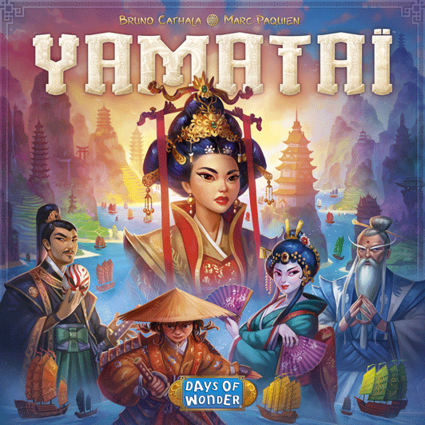
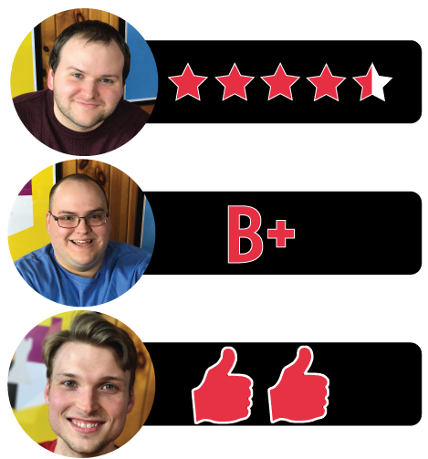

This week Board Crazy reviews Yamatai, a game designed by Bruno Cathala & Marc Paquien and published by Days of Wonder. In Yamatai, you are tasked by Queen Himiko to build the most prestigious city in the land of Yamatai. Check out our reviews below to see what each of us thought of Yamatai!

D reviews Yamatai
 (Author’s
note: this review is meant to accompany our gameplay video and will not
go in-depth on the game’s rules. If you’re interested in learning how
the game is played, please watch the video. It’s not bad.)
(Author’s
note: this review is meant to accompany our gameplay video and will not
go in-depth on the game’s rules. If you’re interested in learning how
the game is played, please watch the video. It’s not bad.)
I think Bruno Cathala and Marc Paquien’s Yamatai is my favorite board game of 2017 so far. I haven’t yet gotten my hands on Gloomhaven, which I know is setting the world on fire, but of the new games I’ve actually played this year, Yamatai is the cream of the crop. It isn’t perfect, and I would be surprised if it becomes a board game standard in the same way some other Days of Wonder releases, such as Ticket to Ride or Small World, have, but this game appeals to me in so many ways. Honestly, I’d rather just go play it again than continue writing this review, but I will persevere for you, dear reader. So let’s get the bad stuff out of the way first because it shouldn’t take long.
A standard building that is worth 3 Prestige Points.
A good theme might not seem terribly important when analyzing a board game, but it’s a factor that I will always appreciate. In my review for Inis, I praised that game for the way it incorporated the folk legends and terminologies of ancient Gaelic culture, despite being potentially unfamiliar or even off-putting to prospective players. Yamatai takes a similar tack by building its theme around the culture, heroes, and legends of ancient Japan, China, and Tibet. Unfortunately, I don’t think the theme of Yamatai meshes all that well with the gameplay. The players are supposed to be builders constructing the capital city of Yamatai in order to earn the favor of the queen, Himiko. However, it never really feels like you’re actually building a city in Yamatai. Yes, the game rewards you for stringing buildings together, but the way the game naturally flows leads to competition over certain islands and, inevitably, broken chains. Just look at our board at the end of our game. If those were the three cities we built, the queen would probably have had us executed. I think limiting where players can start building is a good way to avoid the dreaded “analysis paralysis”, but a bit of isolation would probably go a long way here. Also, the subtitle of the game is literally “For Queen Himiko’s Smile”, which is either a euphemism or a really underwhelming reward for all of our hard work.
The resource tokens… why did they choose tan?
The only other major issue, which won’t apply to all people, is that the game can be rough for colorblind people. I admit that as someone who isn’t colorblind it’s hard for me to gauge just how difficult this actually makes things, but it’s still a shame considering how fun and beautiful this game is. Other than that though, I only have praise for Yamatai. Did I mention that it’s beautiful? Because I love how this game looks. I may seem like a dour miser, but I’ll take pretty and vibrant over muted and gloomy every day of the week. I could see it being too much for some people, but I wouldn’t change a thing (except maybe for the tan culture icons – an odd choice). It of course helps that it has the Days of Wonder seal of quality. I certainly don’t need every board game I play to have a huge budget, but it’s nice to enjoy a AAA title like this where all the art and components are top notch.
More importantly, of course, Yamatai is a blast to play. I remark in our video that this game is terrifying when it’s not your turn, and that’s one of the best things you can say about a strategy game. It builds and relieves tension a lot like the aforementioned Ticket to Ride, where every turn you have to hope one of your opponents doesn’t take that prime real estate you’ve had your eye on and mess up your whole plan. Play proceeds a bit more slowly than it does in Alan R. Moon’s modern classic, but that’s to be expected as this is a much weightier game. There are a number of things which you should always keep track of: your initiative, your abilities, your coin, your building plan, the specialists, etc. And you have to be mindful of all those things for your opponents as well. But it never feels overwhelming, and even early in our game when I hadn’t really developed a strategy yet, I was still having a lot of fun. Yamatai isn’t a perfect game, but it’s damn good and I can’t recommend it enough.
D’s Rating: Four and One-Half Stars out of Five.
Will reviews Yamatai
 As
I said in our playthrough video of Yamatai, if a game looks like it
would be yummy if you poured it into a bowl of milk, then I’m sold.
Fortunately for me, there was a lot more going for Yamatai than just its
deliciously colorful pieces, which were the first things that drew me
to this board game. In fact, there were very few things I disliked
during my few sessions of Yamatai – it might be the best game that I’ve
played so far that released in 2017.
As
I said in our playthrough video of Yamatai, if a game looks like it
would be yummy if you poured it into a bowl of milk, then I’m sold.
Fortunately for me, there was a lot more going for Yamatai than just its
deliciously colorful pieces, which were the first things that drew me
to this board game. In fact, there were very few things I disliked
during my few sessions of Yamatai – it might be the best game that I’ve
played so far that released in 2017.
Published by Days of Wonder, who’ve also produced Ticket to Ride and Shadows Over Camelot (among others), Yamatai falls in line with their other offerings by being visually enthralling. One could argue that the biggest strength of this game is that it is absolutely stunning. I mean, this is up there with the best-looking board games that I’ve ever seen. The colors are vivid and bright, not boring and dim, and the artwork is detailed and just complex enough. The board, the player mats, and the specialist tiles all transported me to Ancient Japan. All in all, the designers completely nailed the theme in the same way the designers of Inis did there’s. I even noticed a touch of Chinese history and lore in there, which was a nice touch.
The Player Mat – Outlines each step in a player’s turn.
When it comes to gameplay, Yamatai is also pretty dang solid. Players select Fleet tiles that feature specific boats and abilities, as well as determine the initiative order for the next round. Players receive their corresponding boat pieces and are presented with an opportunity to trade, which can be done by buying or selling boats. Then, players can play their pieces on the board and create chains of ships. This is where it gets interesting – players can then collect culture tokens or construct buildings. Culture tokens are useful because they can be exchanged for specialist tiles, which are actually legendary heroes of ancient Asia who each have their own special ability. These tiles are extremely helpful over the course of a game and purchasing them early on is really important. The specialist tokens are where Yamatai could have really ruined its balance, but I’m pleased to say that they all work well with each other and are fair. I commend the designers for their attention to detail here.
Once the culture tokens are removed from the board, they’re gone and cannot come back. This tends to be when building ramps up and the true purpose of the game moves to the forefront. After all, the goal of Yamatai is to build the best city of them all so that Queen Himiko grants you her reward. This is where I found myself questioning some of the decisions of the game-makers. If the goal of Yamatai is to build, then why is there such a benefit to other strategies? For instance, one of the specialists awards four victory points outright – all you have to do is buy that tile with culture tokens. And then there’s the coin / money system. For every five coins, players will earn one victory point at the end of the game, and there’s even a specialist that augments this and makes it so that players only need three coins for one point. I’m not saying that players can win by only gathering coin; they will need to build as well. It just seems strange that in a game about building, a player can win without emphasizing construction as their main strategy.
The Specialist, Fu Hsi – At the end of the game, score 1 PP for every 3 coins (instead of 5).
Looking back on it, achieving victory is the ultimate goal of Yamatai (and any other game, really), so any strategy utilized to get there is perfectly fine by me. It was just an error of the designers to stress building as the point of the game. This really isn’t that big of a problem though, and the actual gameplay is quite rewarding and surprisingly intense. Balancing the removal of culture tokens with the placing of buildings is nerve-wracking, to say the least. And going last in a round, especially towards the end of the game, is soul-crushing. I know it doesn’t sound like it, but this is all a good thing. The fact that there was this much strategy and intensity in a board game that features absolutely no combat is very impressive. Combine all of that with the fact that Yamatai just looks so dang pretty, and you realize that this is a game that you’ll need to go back to. Replayability is rare for me to find, but I think this game has got my attention.
Oh and one more thing – I forgot to mention that Yamatai features a high amount of downtime between players’ actions. This is likely due to the ever-changing board – there’s a lot of rethinking as boats are placed and buildings are built. I’m sorry for tacking this on at the end, but it’s important that I acknowledge this flaw. Still, Yamatai is really good, so check it out if it sounds like it’d be up your alley.
I give Yamatai a: B+
Graham reviews Yamatai
 What’s
more important to the overall success of a board game: theme or
mechanics? This question has been discussed ad nauseam among the board
gaming community, and one can find a more detailed analysis on the topic
with a quick google search. I think it’s typically the cohesion of the
two that matters, with some exceptions. Well, Yamatai is one of those
exceptions. In Yamatai, you are tasked by Queen Himiko to build the most
prestigious city in the land of Yamatai. The game itself consists of
trading boats, placing boats, collecting resources, and constructing
buildings. Overall, the game doesn’t do a great job of cohering to the
mechanic and theme, but it almost doesn’t matter . The mechanics are fun
enough to keep you engaged the entire time.
What’s
more important to the overall success of a board game: theme or
mechanics? This question has been discussed ad nauseam among the board
gaming community, and one can find a more detailed analysis on the topic
with a quick google search. I think it’s typically the cohesion of the
two that matters, with some exceptions. Well, Yamatai is one of those
exceptions. In Yamatai, you are tasked by Queen Himiko to build the most
prestigious city in the land of Yamatai. The game itself consists of
trading boats, placing boats, collecting resources, and constructing
buildings. Overall, the game doesn’t do a great job of cohering to the
mechanic and theme, but it almost doesn’t matter . The mechanics are fun
enough to keep you engaged the entire time.
The Fleet Tiles – these determine initiative and what boats you collect from the reserve. The lower the initiative, the worse the fleet.
Other than the somewhat abstract theme of the game, there really isn’t much to knock about Yamatai. The specialists and fleets are well-balanced – it’s exciting seeing what new specialist tile will come up or what fleet tiles are next. The fleet and specialist tiles are a great way to add luck into the game without it affecting the outcome too much. Similar to Ticket to Ride, there is no set strategy that works best – it all depends on how the game develops. I think the most important part when planning out your strategy in Yamatai is to develop one sooner than later during the session. Start working towards something from the beginning and adapt as the game moves on. For instance, I started out by playing to get money, but then shifted to placing buildings around an existing torii. There is a lot of satisfaction that comes with placing a building in one of your groups, especially if it’s next to a torii or palace. You have to be aware of what your opponents are doing, but I never felt like I had to play an excessive amount of defense, which can get frustrating when you only have one action. The time between turns is suspenseful because you never know where your opponents are going to place boats and if they are going to take resources or build. Overall, the gameplay is fantastic and is exactly what I look for in a board game. Actually, thinking about it, I have one criticism to make: the game can end in multiple ways, and that determines if the round will continue through to the last person or end immediately. Personally, this doesn’t bother me, but I understand how it can be frustrating – especially when you have a great turn lined up and the game just ends because a supply of boats has been exhausted.
The game box was designed very well and has a place for all the components of the game.
I also want to point out that the loss of points you get from keeping too many boats in reserve is a great mechanic, as it prevents people from hoarding boats so that their opponents can’t use them. Also, I love how the specialist tiles accumulate coin with each turn when they don’t get selected. It provides needed incentive to take a specialist that may not be seen as desirable. Yamatai was obviously very thought-out and well designed, and there is so much to appreciate about it. Even the game box is well thought-out – there are designated slots for every piece and tile, and there is enough room to fit all of the components without the box exploding. I know that doesn’t really add or substract from the gameplay, but it’s something that doesn’t often get mentioned, so I wanted to give appreciation for Days of Wonder’s attention to detail. I honestly can’t wait to play Yamatai again. I give it two thumbs up.

Leave a Reply
You must be logged in to post a comment.